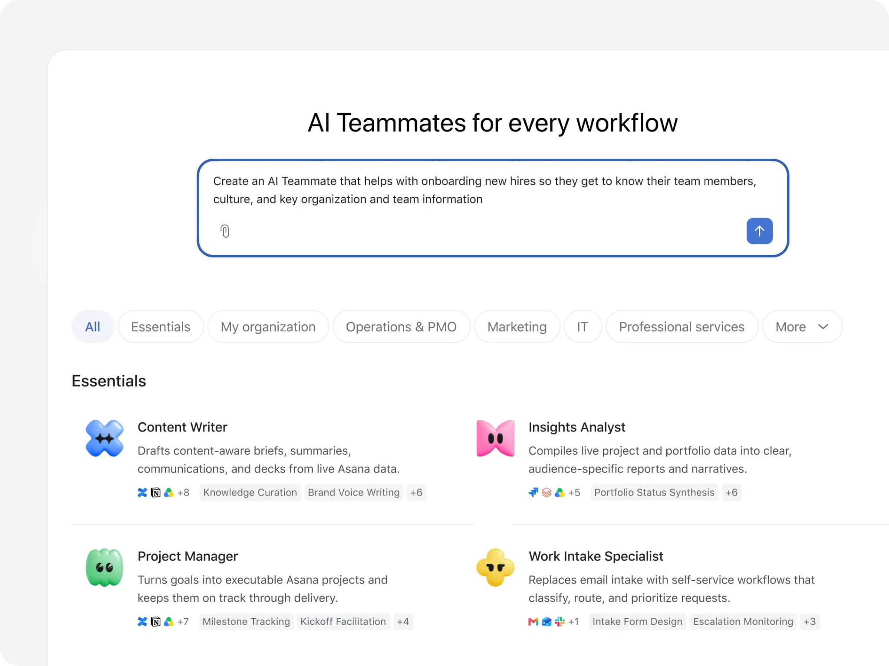

This is the third post in our series on building human-agent teams. The first shared what we’ve learned working with multiplayer AI at Anthropic. The second shared how Slack turns workplace conversation into the context agents need. This one looks at what changes when agents operate on the same platform where teams work.
Years before they introduced AI agents, teams at Asana were iterating on ways to encode structure and accountability into how teams work together. They ultimately built the Work Graph® model, which maps out every task, project, goal, and conversation on a web of relationships, with defined owners, contributors, and dependencies.
When they started building AI agents, they decided that rather than adding new context structures for AI, agents would operate within this same model. They would have defined roles, be assigned tasks, read and write messages, and show up in activity feeds alongside human collaborators—with additional safeguards around what agents can access, and share.
We talked with Arnab Bose, Asana’s Chief Product Officer, about how Asana’s own teams use Claude and work alongside these agents, where Claude models power complex tasks: how each agent gets its role and access, who trains it, how work stays visible to everyone, and the types of jobs agents have on human-agent teams at Asana.
Think through and structure your work before agents act on it
For Asana employees, Claude is the default AI tool, connected to the platforms employees use to work, including Google Drive, Slack, and of course, Asana.
"A person makes sense of their day by taking unstructured data, an idea they have, a conversation in Slack, a meeting recording in Zoom, a Databricks report, information from Google Docs,” Arnab says. “They talk it through with Claude, and then they can pump all of that into the structure that Asana provides with projects and tasks." Once the structure is in place, agents can act on it, with the three capabilities we described in the first post of this series, Building effective human agent teams: persistent memory, their own credentials, and shared context.
How to put this into practice:
- Start with your own ideas. Bring the unstructured pieces of your day, an idea, a Slack conversation, or notes spread across docs, to Claude.
- Debate and discuss with Claude. Use it as a thinking partner: talk the idea through until the next steps are clear.
- Log the actionable items to the Work Graph. Move what's actionable into projects and tasks, where agents and colleagues can pick it up.
Give every agent a role and the tools and access it needs
Asana employees can work with AI agents in any project like they would with a human colleague. Humans design the teams they work on; each employee gets a list of recommended agents they can use to augment their teams’ goals.
Agents are built around roles or types of work, for example, content writer, insights analyst, project manager, work intake specialist, campaign analyst, or campaign coordinator. Each agent comes with pre-built skills based on Asana’s research into how its customers do that work, and with the integrations they would need, such as Hubspot or a document drive.

Each agent also has a profile page that lists its name and purpose, the people who can use it, the administrators, instructions, skills, integrations, and permissions. Asana gives you the tools to make access intentional. “Asana is a contained work surface,” Arnab says. “You could choose to grant access to a specific set of projects versus everything, or a specific set of documents, or a combination of documents and apps.”
Like human users, agents are subject to explicit access controls, but have an additional safeguard: Asana says an agent’s effective access is bounded by the permissions of the person who triggers it. This allows agents to have broad access to public content, while minimizing the risk of anyone accessing information the agent has learned in a private context.
How to put this into practice:
- Define the role before you create the agent. Think about the types of jobs that agents can do on your team, then write down the agent’s purpose, instructions, and which specific jobs it owns, the way you would for a new hire’s first quarter.
- Scope access. Decide which projects and documents the agent can read, which applications it can access, and which actions it can take.
- Name users and admins separately. Many people can work with an agent, but only a small, named group should govern what it can access and how it behaves.
Separate working with an agent from training it
A key feature of Asana’s agents, which it calls AI teammates, is shared memory, which enables an agent to retain information from previous instructions, allowing multiple users to reuse that memory to complete tasks or jobs faster. “AI teammates can be coached and trained as if they were a person on your team,” Arnab says.
There is one role-based restriction in how shared memory works. While anyone can give an agent feedback on a task, only admins and editors can commit feedback to permanent memory, as well as undo, or delete from that memory. For everyone else, the feedback they provide applies only to the current task.
The split is intentional, Arnab says. Asana's communications team hold the pen on the company's voice and tone, so they would be the editors and admins of an agent that writes. Arnab can draft with it, but he can't modify its behavior. And most people never need to touch the machinery at all: "Not everybody on the team needs to understand these concepts, like skills and behavior and memory. There are one or two people on the team who become experts, they set it up correctly, and all the other human beings on the team get the same benefits going forward."
How to put this into practice:
- Decide who trains each agent, and who works with it. Identify subject matter experts inside your business who can help build the agents that the team uses. Everyone else can provide feedback on tasks, but cannot rewrite the agent.
- Match editors to expertise. The team that owns the standard the agent applies, like brand voice or planning conventions, owns (or administers) the agent.
- Build the memory as you work. Feedback can improve the agent with time. Ask the agent to remember decisions worth keeping, or delete ones that are no longer relevant or true.
Keep the agent’s work where everyone can see it
Similar to how agents in Slack post transparently in channels, when a task is assigned to an AI teammate everyone can see that an agent is doing it, and what it does. The agent posts activity, including its research plan and the steps it took, so everyone with access to that task can read what it did, comment, and steer it toward the result they want.
When Asana’s communications team asked Arnab to review a briefing document for a speaking engagement, he @-mentioned the agent on the task and asked it to also factor in his talk track from an earlier talk. The message was brief because he had used that agent many times and the material he referenced was already in the Work Graph. A colleague on the communications team could see his request and the agent’s response, and go back and forth with the agent at the same time.
"You could probably get great quality responses from a one-on-one AI agent if you are highly AI fluent, get that document out, and post it back into Slack or into Asana," Arnab says. "But at that point, the other human beings who are reviewing that content don't know what the prompt was and what the back-and-forth was. If they disagree with some of the guidance you provided, that's impossible for them to get aligned on." On a shared task, the request, the pushback, and the output are in one place, and the people reviewing the output can also revise the instructions that produced it.
How to put this into practice
- Bring in agents where your team reviews work. This way, the request, the agent’s steps, and the results are in one place, and reviewers can change the instructions or the output.
- Make agent work visibly agent work. This way, people will know the work is being done by an AI agent rather than a human colleague.
- Enable reviewers to coach the agent’s work. Asana’s agents post their plan and steps in the shared task, so other reviewers can provide further instructions or feedback.
Three jobs Asana has handed to agents
Claude powers any agentic work that generates documents or runs complex tasks at Asana. Here are three examples from different teams across the company:
Answering product questions from a Slack channel
As Asana launches features, sellers and customer success staff can ask questions in a shared Slack channel. Before AI teammates, the same questions were posted repeatedly and subject-matter experts were @-mentioned each time. A searchable knowledge base wasn’t a practical solution, Arnab says, because the answers are nuanced and they change. "You kind of need to have some amount of taste-making around what is the current state of the product," he says.
Those questions still go to Slack, because that's the simplest place for the field to ask. Now, an Asana app in the channel turns each question into an Asana task, and an agent picks it up. If approved guidance exists, the agent replies with source links. If there is no approved answer and the question points to a gap in the product, the agent creates a task in the product team's intake project and adds it to the backlog. And if the same question keeps coming up and the agent keeps posting the same record, it creates a task for the enablement team to update the training material and documentation.
This process frees up valuable time for the enablement team to focus on strategic, higher priority work, while also informing other areas of the business. For example, if there are a lot of questions on a particular topic around a new product, that’s a signal for the enablement team to focus on it with extra training or information.
Briefing executives on at-risk renewals
Asana's Chief Customer Officer, Josh Abdulla, used to produce a weekly at-risk renewals briefing for the executive team based on updates from customer success managers (CSMs) who flagged at-risk renewals and updated accounts as conditions changed. Across thousands of customers globally, the volume of updates made it impossible to stay current without a dedicated person synthesizing them, which was tedious work, and it made the process reactive. "Josh knew about problems when leaders told him, not when the data first showed it," Arnab says.
The customer experience organization built an agent AI teammate in Asana called At-Risk Renewal. It reads every at-risk renewal task across the global portfolio, including each CSM's updates, status notes, and comments, and generates a structured daily digest organized into three buckets: positive momentum, negative momentum, and recommended follow-ups. It runs a global view first, then cuts by region, and pushes the digest automatically each morning to the Chief Customer Officer, the Chief Revenue Officer, and every regional customer success leader. Because the digest lands in a shared space, those leaders can ask follow-up questions, such as what the leading indicators were behind a particular account's churn forecast, and coach the agent to remember things for the next run, so the report improves each morning.
"They could probably have Claude generate a report for themselves," Arnab says. "But how do we get to the place where there's standardization of the report, there's a shared workspace, and it keeps getting better with every single run?"
Planning engineering cycles with Command
When Asana ran automated coding loops on its own product, its cycle times and releases slipped, because the cycles were getting bloated by automatically generated changes. The loop itself has become common at software companies: gather customer feedback from various channels, synthesize it, and trigger coding agents to turn it into pull requests (PRs). "Code generation is now no longer the bottleneck," Arnab says. "The bottleneck is around planning, decision-making, and refinement." Asana's engineering organization now runs on Command by Asana, a product for managing large engineering teams, and uses it to manage that loop.
In Command, a team space holds a group of 10 to 12 engineers who work on one product. Agents populate the team's unplanned board with tickets pulled from customer feedback and from comments in the team's feedback channel in Slack. People decide what moves from that board into the cycle, and Command predicts time to completion for the cycle with optimistic, balanced, and conservative estimates.
A ticket can be assigned to a person or to a coding agent, and because the cycle data is all in one place, a manager can ask in chat why a release is off track and what tradeoffs would bring it back. Command answers from the data with what's driving the signal and which changes to trade. All of it is exposed through Asana's MCP server, the connection that lets an assistant like Claude read it, so someone like Arnab or his CTO counterpart can ask Claude what's on track without opening Command.
“Humanity thrives when teams can work together effortlessly, and today every team is part human, part agent,” Arnab says. “That’s the kind of work we design for: one shared context that both humans and agents can work from, with a distinct identity for every agent so its contributions and access can be audited, and a durable record of what agents can learn so the team’s knowledge compounds instead of evaporating.”